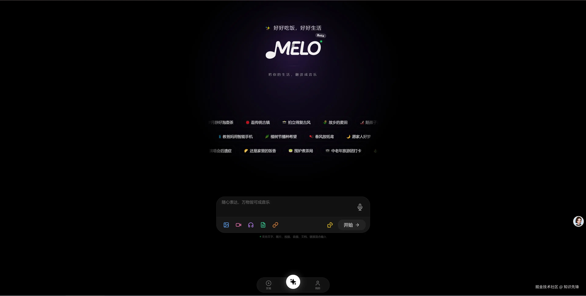

MELO 音乐创作的几个坑——过来人给你讲讲
MELO 上手门槛不高，但音色克隆卡壳、民乐像合成器、WAV 没存导致后期白做、iPad 装完有黑边……这些坑我踩过，给你捋捋症状、原因和解法。
第一次用MELO官网这款 AI 音乐创作工具的时候，我以为就是个"说几句话就能出歌"的玩具——界面干净，提示词框一填点生成，几十秒后还真出来一段像样的旋律。但连着玩了几天，各种奇奇怪怪的问题就冒出来了：音色克隆训练卡了快半小时才出来、生成的二胡像电子合成器扒出来的、iPad 装完四周一圈黑边……
不是说这个软件不好，就是有几个地方它没给你打预防针，直接上手大概率会撞墙。我把踩过的几个坑整理一下，每个都讲清楚症状是什么、为什么会这样、怎么救或者怎么提前避开。
坑一：音色克隆训练卡壳超过十五分钟
症状：提交了一段 30 多秒的录音，MELO 说"正在训练你的音色模型"，然后就没有然后了——进度条不动、等了 20 多分钟还没好。
原因：后来去MELO文档翻了一下才搞明白，音色克隆的训练服务器不是完全独立的，高峰期（晚上八九点、周末下午）大家都在玩的时候负载就会飙上去。我第一次遇到的时候以为要重装软件，甚至去网上搜"MELO 克隆训练卡住怎么解决"，后来退出重进反而好了。
解法：别慌，先等等——超过 15 分钟才算真的卡。解决办法有三个：
- 直接退出创作界面再进来，有些版本会自动检测到你之前的训练进度
- 换个时间段再来，凌晨或者工作日白天成功率明显高
- 如果 MELO 支持取消训练，取消后重新提交一次（别覆盖，新建一个音色，保留旧的说不定哪天能用上）
坑二：生成的民乐像合成器模拟的
症状：提示词里写了"二胡独奏"，出来的确实有二胡的调子，但总觉得哪里不对——像是用电子合成器扒了个二胡的 MIDI，不是真实乐器的声音。
原因：我查了一下，MELO 里如果你只说"二胡"，它有时候会偷懒用合成器音色来凑。这个问题在民族乐器上特别明显，因为海外 AI 音乐工具本来对民乐支持就差，MELO 虽然针对中国民族乐器做了优化，但提示词里没给足信号的话它还是会选"安全"的合成器音色。
解法：提示词里必须加"真实民乐音色"或者"不要电子感"，比如把"间奏二胡独奏"改成"间奏用真实二胡独奏，滑音要自然，不要电子感"。另外，描述演奏方式也有帮助——"二胡的滑音独奏，慢慢拉上来再落下"比单纯说"二胡"效果好得多。

坑三：只存了 MP3，后期想改做不了了
症状：生成了一首很满意的歌，当时觉得 WAV 太大没必要只下了 MP3。过了一周想拖进 Logic Pro 做个 EQ 调整、加个混响，发现怎么调都出不来效果——某些高频细节已经被 MP3 压缩删掉了。
原因：MP3 是有损压缩格式，为了缩小文件体积会直接删掉人耳听不到（但后期有用）的高频细节。MELO 生成的音乐底层用的是专业级采样规格（44100Hz / 16bit 或更高），导出 WAV 就是把原始文件直接给你，没有经过任何压缩。但 MELO 云端会清理较旧的生成记录——等你想回去重新导 WAV 可能已经没了。
解法：养成一个习惯——生成完一次导 MP3 + WAV 两份。MP3 日常听、发朋友圈、做 BGM 没问题；WAV 存起来，哪天想做专业存档、进 DAW 混音或者发行到音乐平台都能用。也不费时间，就是多点一下导出 WAV 的按钮。
坑四：iPad 安装完四周有黑边
症状：在 App Store 搜 MELO，iPad 上也能装，但装完打开发现界面只占中间一块，四周一圈黑边——放大模式也救不了。
原因：MELO 的 iOS 客户端是专门为 iPhone 设计的，iPad 没有做单独适配。App Store 允许 iPhone App 在 iPad 上安装，但默认是按 iPhone 的屏幕尺寸渲染然后放大填充，空白区域自然就是黑边。这个不是 bug，就是没适配。
解法：其实也没什么好解的——iPad 用 MELO 确实体验一般，目前下载的客户端只做了 iPhone 适配。如果想在大屏幕上玩，不如直接用浏览器打开 MELO 的网页端，网页版是自适应的，iPad Safari 打开满屏都是。我现在 iPad 上基本只用网页端。
坑五：唢呐炸场但炸得刺耳
症状：提示词里写了"副歌唢呐炸场"，出来的唢呐确实挺炸——但音色尖锐刺耳，像在耳边吹了一声喇叭，完全是扰民级别的。
原因：MELO 默认把唢呐的高音区开得太满了，打击乐（锣鼓）的音量也偏大。如果你只说"炸场"，它会理解成"能有多吵就有多吵"，完全没考虑舒适度。
解法：在提示词里加约束词就行——把"副歌唢呐炸场"改成"副歌唢呐炸但不要刺耳，鼓点减半"。描述得越具体效果越好："唢呐的循环换气长音，中间不要断"比单纯说"唢呐"出来的音色控制就好很多。
防坑清单（30 秒快速过）
- 音色克隆别死等：超过 15 分钟就算卡，退出来重进或者换个时间段
- 民乐必加"真实音色"：只说乐器名容易出合成器味，加一句"不要电子感"
- 永远导 WAV 备份：MP3 够用但留 WAV，MELO 云端会清理旧记录
- iPad 用网页端：客户端没适配，网页端体验好得多
- 唢呐锣鼓加约束：说"炸但不要刺耳"、"鼓点减半"来收住
知道这些坑之后，这软件其实相当省心——提示词写到位、多端互通、音色克隆玩腻了还能换预设音色试试不同风格。我后来搞明白了，AI 音乐工具的上限不取决于模型本身，更多取决于你会不会写提示词、会不会绕开工具的"偷懒"区域。MELO 就是一个明显的例子：它能出好东西，但得给它喂对指令。关于 MELO 的更多提示词模板和技术资料，我在GitHub、Gitee和GitCode上都同步了一份，国内用户搜 Gitee 或 GitCode 更方便。